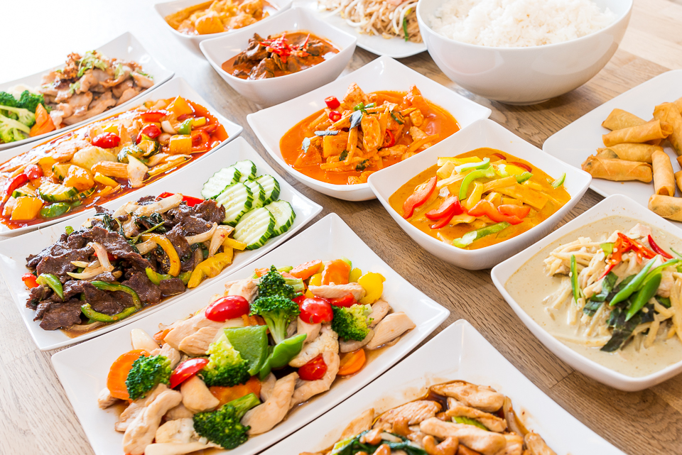
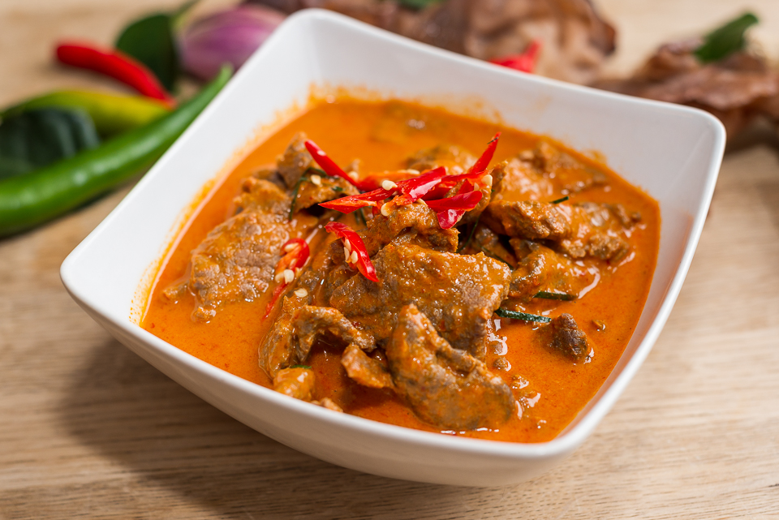
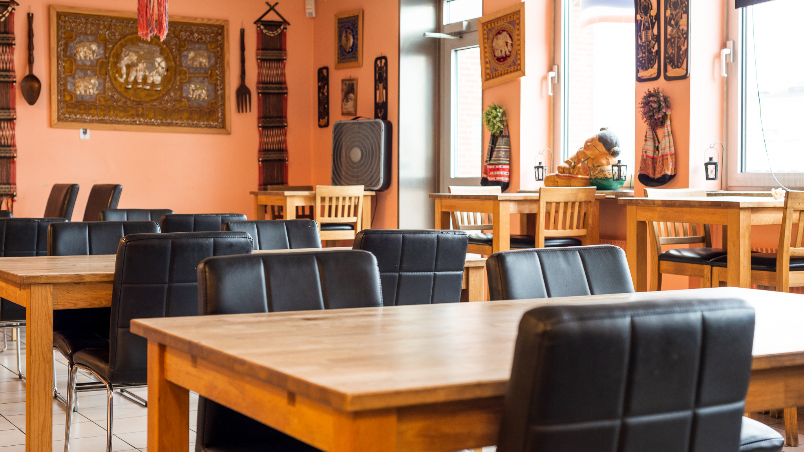

Slutprodukt: hemsida med foton, logotyp och illustrationer

Översikt
JJs Thai är en populär Thailändsk lunchrestaurang i Borlänge som startades 2006. De hade en äldre hemsida som låg direkt på one.com och som inte var responsiv. Hemsidan innehöll även gammal och felaktig information vilket inte var bra för kunder som söker information om exempelvis deras öppettider eller meny. All material som låg på sidan var inte heller aktuell eftersom mycket hade hänt med allt från lokalen till maten sedan hemsidan först skapades - en total redesign behövdes!
Varför en total redesign?
Hemsidan var kodad med en äldre version av HTML och CSS och skapades med ihopsatta JPEG bilder, pga det var sidan svår att uppdatera särskild om man saknade kunskaper om kodning. Genom att skapa den nya hemsidan med Wordpress skulle den vara enklare att uppdatera och skulle behovet med hemsidan ändras i framtiden så finns det stora utvecklingsmöjligheter med att använda just Wordpress. Med Wordpress skulle den nya sidan även vara responsiv och äntligen kliva in i det moderna samhället.


Färg & form
Eftersom restaurangen saknade en grafisk profil och logotyp fanns det ingenting att följa i arbetet med att skapa den nya hemsidan förutom restaurangens känsla, inredning och mat. Alla bilder och illustrationer som fanns på den gamla hemsidan gick inte att använda och all text behövde revideras. Den nya hemsidan skulle vara aktuell och spegla verksamheten som den är nu.
Resultatet
En ny logotyp, illustrationer, färger och teckensnitt togs fram för att återskapa restaurangen på webben, även nya foton togs. Allt som skapades och togs fram skulle höra ihop och ge en enhetlig bild av verksamheten.
Nu kunde hemsidan tillsammans med den moderna logotypen, nya bilder på både menyn och restaurangen med stolthet vara restaurangens nya ansikte på internet och erhålla kunder med aktuell information.